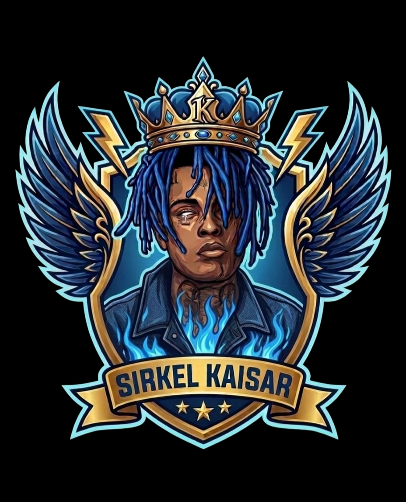

Tahun 2016, di kawasan miskin dan keras East Los Santos, kehidupan di jalanan bukan tentang pilihan, melainkan tentang bertahan hidup. Di sana, seorang pemuda bernama Romancx Kaisar tumbuh tanpa arah. Ia yatim piatu sejak kecil, hidup di jalan 12Th Kaisar Street Gang yang dipenuhi geng, narkoba, dan kekerasan. Romancx menyaksikan sendiri bagaimana teman-temannya mati sia-sia karena sistem yang tidak pernah peduli. Dari rasa marah dan keinginan untuk berubah, Romancx mulai membangun sesuatu — bukan sekadar geng, tapi keluarga.
Bersama empat sahabatnya, Drayven, Nowoo, kujee, dan Kenz, Romancx membentuk sebuah kelompok kecil yang mereka sebut 12th Kaisar Street Gang, diambil dari nama jalan tempat mereka tumbuh dan dari tekad Romancx untuk menjadi “raja jalanan” di wilayahnya sendiri. Awalnya, mereka hanyalah sekumpulan remaja yang mencuri motor, memalak toko kecil, dan menjual barang curian untuk bertahan hidup. Tapi Kaisar punya visi lebih besar. Ia ingin agar semua anak muda jalanan punya tempat yang bisa mereka sebut rumah, tempat di mana mereka tidak harus tunduk pada siapapun selain sesama saudara.
Semakin lama, 12th Kaisar Street mulai dikenal di East Los Santos. Romancx mengajarkan disiplin dan keberanian pada anak-anak muda yang bergabung. Setiap dinding, gang, dan tiang listrik mulai dipenuhi coretan “12TH KSR” sebagai tanda keberadaan mereka. Romancx percaya bahwa untuk dihormati di jalanan, mereka harus menunjukkan bahwa mereka berani mati untuk nama mereka sendiri.
Namun kejayaan selalu mengundang musuh. Geng besar seperti Varrio Locotes dan Los Surenos 18 melihat 12th Kaisar Street sebagai ancaman baru yang tumbuh cepat. Perang pun tak terhindarkan. Malam-malam di Los Santos berubah menjadi medan pertempuran. Suara tembakan bergema di antara gedung-gedung kumuh, dan jalan 12th Avenue berubah menjadi lautan darah. Romancx memimpin sendiri setiap pertempuran, meski terluka parah di bahu dalam bentrokan besar yang kemudian dikenal sebagai The Kaisar Street